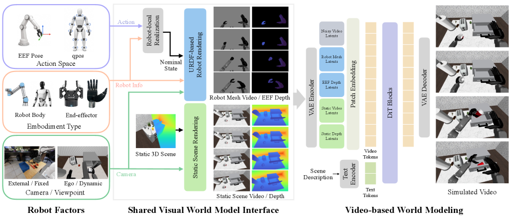
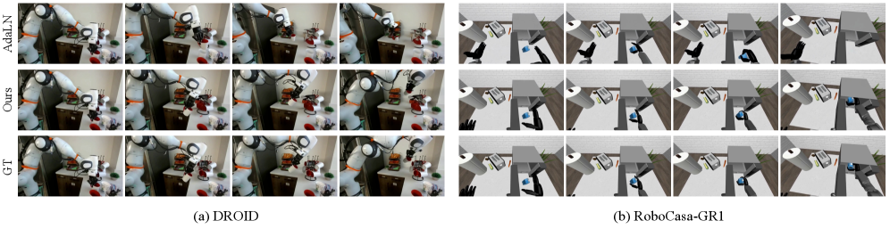

World ModelVideo DiffusionURDF RenderingCross-EmbodimentWan 2.1
제출: 2026년 7월 24일 · 백본 Wan 2.1 14B · 480×832, 81 프레임 · LoRA r=64
한 줄 요약 (TL;DR)
Action-conditioned video world model에서 액션→관측 과정을 (i) 로봇 컨트롤러/기구학이 처리하는 action realization과 (ii) 씬 반응 예측으로 분리(factor)한 후, 앞 부분은 시뮬레이터의 URDF 렌더러로 뽑아 렌더된 로봇 지오메트리 + EEF depth + 씬 depth를 조건으로 넣는다. 이 인터페이스는 (a) 로봇 body 학습 부담을 제거하고 (b) 미래 관측을 컨디션에 안 흘려서 정보 누출도 없다. Wan 2.1 14B + LoRA로 DROID PSNR 21.87·LPIPS 0.178(vs AdaLN 18.57/0.224), RoboCasa-GR1 PSNR 24.61·LPIPS 0.131, unseen embodiment까지 zero-shot 일반화.
1배경 · 문제의식
Action-conditioned 비디오 world model은 액션 a가 관측 o를 바꾸는 확률 p(ot+1|ot, at)을 배운다. 그런데 이 사상은 실제로 두 단계로 분해된다: (1) action realization — 컨트롤러/기구학이 명령을 실제 로봇 body의 상태 시퀀스로 만드는 결정적(deterministic) 과정, (2) scene response — 로봇 body가 씬과 상호작용해 물체 반응이 일어나는 확률적 과정. 기존 방법들은 둘을 뭉뚱그려 처리해 두 실패 모드를 낳는다:
Vector-conditioned (AdaLN 등) — 로봇 body의 시공간 형상을 모델이 처음부터 배워야 하고, embodiment마다 재학습.
Future-state leakage — 학습 중 미래 관측/실제 pose를 조건에 넣으면 모델이 상호작용 결과를 "미리 알고" cheating (배포 시에는 얻을 수 없음).
2핵심 Contribution
Robot-Factored 인터페이스 — 액션 a를 nominal trajectory τN(컨트롤러+기구학만으로 결정되는 씬-무관 로봇 궤적)으로 결정적으로 realize한 뒤, 이를 URDF 렌더로 시각화해 world model에 넣는다. World model은 이제 "씬 반응"만 배우면 된다.
Depth-aware 시각 조건화 — 렌더된 RGB에 EEF depth + 씬 depth를 함께 조건화해 2D 오버랩만으로는 애매한 접촉/가림을 해소.
Embodiment-agnostic + 누출 없음 — 시각 인터페이스는 로봇 종류·시점과 무관해 unseen embodiment에 zero-shot 일반화하고, 나아가 사람 손 시연을 리타깃해 로봇 지오메트리로 렌더하는 것만으로 human-to-robot 비디오 생성까지 지원.
3Method
세 개의 결정론적 연산자
ΦR (Realization)
액션 a → 컨트롤러/기구학 → nominal trajectory τN. DROID는 teleop 명령을 Isaac Lab의 씬-free env에서 replay, RoboCasa-GR1은 DiT4DiT 액션을 collision-free shadow rollout으로 replay.
ΠR (Robot render)
τN을 URDF 메쉬로 카메라 좌표 렌더 → 로봇 RGB + EEF depth (link geometry·gripper shape 보존).
ΠS (Static context)
초기 씬 상태를 로봇 없이 RGB+depth로 렌더. 예측 프레임 전반에 걸쳐 유지.
Depth를 함께 넣는 이유
RGB 렌더만으로는 로봇 EE와 물체가 카메라에서 겹쳐 보여도 실제 접촉인지, 앞뒤로 얼마나 떨어져 있는지를 모른다. EEF depth Deef와 씬 depth Dscene를 함께 조건화하면 근접·접촉·가림 순서를 명시적으로 알려줄 수 있다.
Backbone과 학습
백본
Wan 2.1 14B (latent video diffusion). 사전학습된 video VAE 인코더가 모든 조건 스트림을 처리
주입
Patch embedding 확장으로 추가 조건 채널 삽입. Transformer에 LoRA r=64, α=64 부착
목적
Flow matching
해상도 / 프레임
480×832 픽셀, 81 프레임 @ 16 fps
보조 실험 백본
SVD 1.5B (192×320, DROID-only ablation)
왜 leakage-free인가: τN은 씬-무관하게 컨트롤러/기구학만으로 결정된다. 즉 배포 시에도 액션 명령만 있으면 얻을 수 있는 정보다. 반면 실제 로봇 pose는 씬과의 상호작용 결과라서 그것을 조건에 넣으면 미래를 부분적으로 유출한다. Robot rendering은 이 경계를 깨끗이 유지한다.
4실험 결과
Wan 2.1 (480×832, 두 데이터셋 통합 학습)
Method
DROID
RoboCasa-GR1
PSNR ↑
SSIM ↑
LPIPS ↓
PSNR ↑
SSIM ↑
LPIPS ↓
AdaLN state vector (baseline)
18.57
0.824
0.224
17.67
0.835
0.194
Rendered mesh + depth (ours)
21.87
0.859
0.178
24.61
0.889
0.131
DROID(고정 외부 카메라, 로봇 팔)와 RoboCasa-GR1(에고센트릭, 휴머노이드) 모두에서 vector 조건 baseline을 큰 폭 상회. 특히 RoboCasa-GR1의 LPIPS 0.194 → 0.131로 −32%.
학습 때 보지 못한 로봇 조합에도 렌더 인터페이스만 바꾸면 그럴싸한 씬 반응 예측. 사람 손 시연을 URDF 로봇 지오메트리로 리타깃 렌더하면 사람 → 로봇 상호작용 비디오도 생성 가능.
5Ablation (DROID)
Variant
PSNR ↑
SSIM ↑
LPIPS ↓
Raw action → mesh render
21.57
0.860
0.175
Nominal trajectory → mesh render
22.44
0.872
0.164
Nominal + EEF/scene depth (full)
23.08
0.874
0.161
두 factoring 요소가 모두 기여: (1) raw → nominal 궤적으로 realization을 결정론적 파이프로 정리하면 이득, (2) 여기에 depth를 붙이면 접촉·가림 애매성 해소로 또 이득. LPIPS 0.175 → 0.164 → 0.161로 단계적 개선.
6핵심 Figure / Table

Figure 1 — Robot-factored visual interface. 정적 씬 컨텍스트 + nominal 로봇 궤적을 URDF로 렌더한 RGB·EEF depth를 조건으로 넣어 world model이 씬 반응만 예측하도록 만든다. Vector-conditioned 방식과 달리 embodiment-agnostic. (출처: arXiv:2607.22535)

Figure 3 — Qualitative comparison. AdaLN state vector 대비 rendered mesh + depth 방식이 로봇 body 형상·접촉·가림을 훨씬 정확하게 예측함. (출처: arXiv:2607.22535)
Table 2 (DROID/RoboCasa-GR1 결과) — Rendered mesh + depth가 vector 조건 baseline을 두 도메인 모두에서 상회 (LPIPS 0.224 → 0.178, 0.194 → 0.131). Table 3 (Ablation) — raw action → nominal trajectory → +depth 순으로 단계적 개선. Factoring의 각 축이 개별 기여.